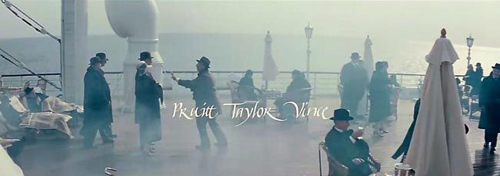
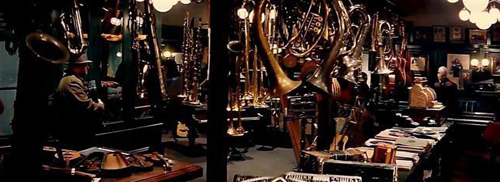

基本信息
 中文名
中文名 海上钢琴师
外文名
The Legend of 1900
其它译名
1900海上钢琴师/声光伴我飞（港）/一九零零的传奇
出品时间
1998年
制片地区
意大利
导 演
吉赛贝·托纳多雷
编 剧
亚历山卓·巴利科
类 型
剧情 / 爱情 / 音乐
主 演
蒂姆·罗斯，比尔·努恩，梅兰尼·蒂埃里，普路特·泰勒·文斯
片 长
165min / 120min(法国版) / 169min(加长版)
上映时间
1998年10月28日 意大利
分 级
Rated R
对白语言
英语，法语
色 彩
彩色
imdb编码
tt0120731
主要奖项
1990年意大利金像奖
imdb综合评分
9.2(251,194 votes)